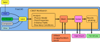

CfdOF Workbench

Introduction
The CfdOF Workbench provides a Computational Fluid Dynamics (CFD) workflow for FreeCAD. This workbench aims to help users set up and run CFD analyses within the FreeCAD modeller, and serves as a front-end (GUI) for the popular OpenFOAM® CFD toolkit (www.openfoam.org, www.openfoam.com). It guides the user in selecting the relevant physics, specifying the material properties, generating a mesh, assigning boundary conditions and choosing the solver settings before running the simulation. Best practices are specified to maximise the stability of the solvers.
Features
For a list of current features, please visit the CfdOF Features page.
Installation
The CfdOF Workbench can be used on Linux, Windows, and Mac OSX – although not widely tested. Since the workbench makes use of external solvers, the amount of manual setup will depend on the operating system that you are using.
See CfdOF Install for instructions on how to install and set up the CfdOF Workbench.
Workflow
The steps to carry out a Computational Fluid Dynamics are:
- Pre-processing: setting up the analysis problem.
- Modelling the geometry: creating the geometry with FreeCAD, or importing it from a different application.
- Creating an analysis.
- Selecting suitable models for the interesting physical and chemical phenomena.
- Defining the fluid properties.
- Specifying the appropriate chemical and physical boundary conditions at cells which coincide with or touch the domain boundary
- Creating and checking the mesh for the geometrical model.
- Solving: running an external OpenFOAM® solver from within FreeCAD.
- Post-processing: exporting the results so they can be postprocessed with ParaView.
{kind=link}

Workflow of the CfdOF Workbench
Menu: CfdOF
- Analysis Container: Creates a new container for Computational Fluid Dynamics.
{kind=link}
- Physics Model: Lets you select the solver that is to be used in the CFD study.
{kind=link}
- Fluid Properties: Lets you input the properties of the fluids to be used in the simulation.
{kind=link}
 CFD Mesh: Lets you build the backgroud, or base, mesh from the geometry.
CFD Mesh: Lets you build the backgroud, or base, mesh from the geometry.
- Mesh Refinement: Lets you refine the mesh on the surface and for a volume. Also lets you extrude a mesh.
{kind=link}
- Fluid Boundary: Lets you...
{kind=link}
 Initialise Flow Fields: Lets you...
Initialise Flow Fields: Lets you...
- Initialisation Zones: Lets you...
{kind=link}
- Porous Zone: Lets you...
{kind=link}
- Reporting Function: Lets you...
{kind=link}
- Scalar Transport Function: Lets you...
{kind=link}
- CFD Solver: Lets you...
{kind=link}
Information
The following pages give further information on different topics of the CfdOF Workbench.
- Meshing: tips regarding meshing.
- Viewing Mesh:
- Checking Mesh:
- Solver:
- Paraview:
Tutorials
Disclaimer
This offering is not approved or endorsed by OpenCFD Limited, producer and distributor of the OpenFOAM software via www.openfoam.com, and owner of the OPENFOAM® and OpenCFD® trade marks.
- Menu: Analysis Container, Physics Model, Fluid Properties, Initialise Flow Fields, CFD Solver, CFD Mesh, Mesh Refinement, Interface Dynamic Refinement & Shockwave Dynamic Refinement, Fluid Boundary, Initialisation Zones, Porous Zone, Reporting Function, Scalar Transport Function
- Information:
- Tutorials:
- Getting started
- Installation: Download, Windows, Linux, Mac, Additional components, Docker, AppImage, Ubuntu Snap
- Basics: About FreeCAD, Interface, Mouse navigation, Selection methods, Object name, Preferences, Workbenches, Document structure, Properties, Help FreeCAD, Donate
- Help: Tutorials, Video tutorials
- Workbenches: Std Base, Assembly, BIM, CAM, Draft, FEM, Inspection, Material, Mesh, OpenSCAD, Part, PartDesign, Points, Reverse Engineering, Robot, Sketcher, Spreadsheet, Surface, TechDraw, Test Framework
- Hubs: User hub, Power users hub, Developer hub